Clique em uma região ou tópico para ver o conteúdo.
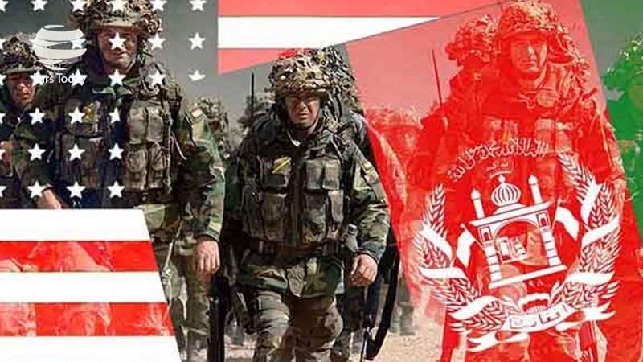
O conflito entre os Estados Unidos e o Afeganistão (envolvendo o grupo extremista Talibã e a rede Al-Qaeda) ocorreu no território do próprio Afeganistão.
• Localização geográfica: O país fica localizado na Ásia Central, fazendo fronteira com Paquistão, Irã, Turquemenistão, Uzbequistão, Tajiquistão e China.
• Principais pontos de combate e sedes: As operações militares e os confrontos espalharam-se por todo o território afegão — incluindo as montanhas e áreas rurais onde o Talibã se escondia, bases militares estratégicas como a Base Aérea de Bagram, e a capital, Cabul, que foi o centro do poder derrubado em 2001 e retomado pelo Talibã em agosto de 2021.
• Duração: O conflito estendeu-se de outubro de 2001 até agosto de 2021, quando as tropas americanas concluíram sua retirada do país.
O conflito concentrou-se principalmente em três regiões estratégicas dentro do Afeganistão (e na fronteira vizinha):
• Sul e Leste (Províncias de Helmand e Kandahar): Foi a região com os combates mais intensos. Kandahar é o berço histórico do Talibã, e o vale do rio Helmand era um forte reduto do grupo, exigindo grandes ofensivas dos EUA e aliados.
• Leste e Fronteira com o Paquistão (Montanhas de Tora Bora): Área montanhosa de difícil acesso onde líderes da Al-Qaeda, incluindo Osama bin Laden, esconderam-se após a invasão de 2001. O conflito também transbordou para a região tribal do noroeste do Paquistão (como o Waziristão), usada como refúgio pelos insurgentes.
• Centro-Leste (Cabul e Vale de Panjshir): A capital Cabul foi o principal centro político e alvo inicial da invasão, enquanto a região ao norte da capital (como Bagram) serviu como a principal base militar e logística dos Estados Unidos durante os 20 anos de guerra.
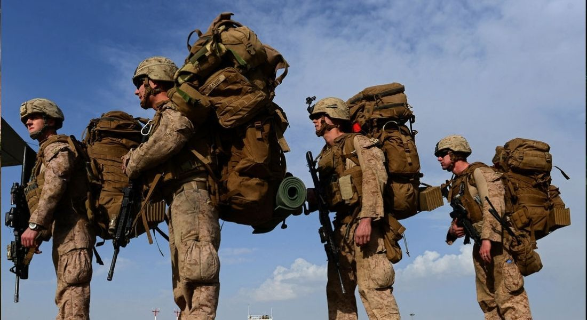
O conflito entre os Estados Unidos e o Afeganistão surgiu em outubro de 2001, como uma resposta militar direta dos EUA aos ataques terroristas de 11 de setembro de 2001. A invasão teve como objetivo capturar Osama bin Laden e desmantelar a rede Al-Qaeda, que recebia abrigo do regime do Talibã no território afegão.
• Os ataques de 11 de setembro: Em 11 de setembro de 2001, militantes do grupo extremista Al-Qaeda sequestraram quatro aviões comerciais nos EUA. Eles lançaram duas aeronaves contra as Torres Gêmeas em Nova York e uma contra o Pentágono, deixando quase três mil mortos.
• O abrigo da Al-Qaeda no Afeganistão: O líder da Al-Qaeda, Osama bin Laden, operava a partir do Afeganistão. O país era governado desde 1996 pelo Talibã, um grupo fundamentalista islâmico que compartilhava ideologias extremistas e protegia os campos de treinamento da rede terrorista.
• A recusa do Talibã: Logo após os atentados, o presidente americano George W. Bush exigiu que o Talibã entregasse Osama bin Laden e fechasse todas as bases da Al-Qaeda no país. O Talibã recusou o ultimato, alegando falta de provas concretas do envolvimento de Bin Laden nos ataques.
• A invasão liderada pelos EUA: Diante da recusa, os Estados Unidos, com o apoio do Reino Unido e de forças locais afegãs opositoras (a Aliança do Norte), lançaram a Operação Liberdade Duradoura em 7 de outubro de 2001.
• Queda rápida e guerrilha longa: Os bombardeios aéreos e a ofensiva terrestre derrubaram o regime do Talibã em poucas semanas, tomando a capital Cabul em novembro de 2001. No entanto, os líderes do Talibã e da Al-Qaeda fugiram para as montanhas e para o vizinho Paquistão, dando início a uma guerra de guerrilha que durou 20 anos.
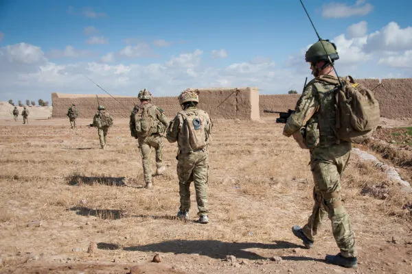
O conflito envolveu principalmente dois grandes blocos: de um lado, uma coalizão internacional liderada pelos Estados Unidos e o governo afegão apoiado pelo Ocidente; do outro, o Talibã e redes extremistas aliadas.
• Estados Unidos: Foram o principal ator militar e financeiro, liderando a invasão inicial e mantendo o maior contingente de tropas durante os 20 anos de guerra.
• OTAN e Aliados Internacionais: A Organização do Tratado do Atlântico Norte (OTAN) assumiu o comando da força internacional (ISAF) em 2003. Países como Reino Unido, Canadá, Alemanha, França, Itália e Austrália enviaram milhares de soldados.
• Aliança do Norte: Uma frente unida de facções armadas afegãs que já lutavam contra o Talibã antes de 2001. Eles foram fundamentais no combate terrestre inicial ao lado das forças especiais americanas.
• Governo da República Islâmica do Afeganistão: Criado após a queda do Talibã em 2001, esse governo contou com o apoio do Exército Nacional Afegão (treinado e equipado pelos EUA e aliados) para tentar manter o controle do país.
• Talibã: O movimento fundamentalista islâmico que governava o país até 2001. Após ser derrubado, reorganizou-se como uma força de guerrilha e lutou para expulsar as tropas estrangeiras e retomar o poder.
• Al-Qaeda: A rede terrorista liderada por Osama bin Laden, alvo original da invasão americana. Embora enfraquecida ao longo dos anos, manteve alianças históricas com o Talibã.
• Rede Haqqani: Uma facção insurgente extremamente violenta e autônoma, fortemente ligada ao Talibã e à Al-Qaeda, que operava na fronteira com o Paquistão e realizava ataques complexos em Cabul.
• Estado Islâmico - Província de Khorasan (ISIS-K): Surgiu na região por volta de 2015 como um braço local do Estado Islâmico. O grupo combateu tanto as forças americanas e o governo afegão quanto o próprio Talibã, por rivalidades ideológicas.
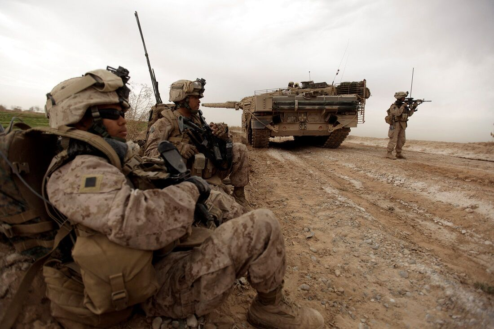
Os interesses no conflito entre os Estados Unidos e o Afeganistão envolveram objetivos declarados de segurança nacional, disputas geopolíticas na Ásia Central e motivações ideológicas dos grupos locais.
• Segurança e Contraterrorismo: O objetivo principal e imediato era destruir os campos de treinamento da Al-Qaeda, capturar Osama bin Laden e impedir que o Afeganistão voltasse a ser usado como base para ataques terroristas contra o Ocidente.
• Posição Geopolítica Estratégica: O Afeganistão fica no coração da Ásia Central, fazendo fronteira com potências e rivais estratégicos dos EUA, como China, Irã e áreas de influência da Rússia. Manter bases militares na região garantia vigilância e projeção de poder militar americano.
• Estabilização e Construção de Estado: Os EUA buscaram instalar um governo democrático aliado em Cabul para criar estabilidade regional e promover direitos humanos, especialmente os direitos das mulheres, como forma de legitimar a presença internacional a longo prazo.
• Recursos Naturais e Rotas Energéticas: Embora não tenha sido o motivo inicial da invasão, o país possui vastas reservas minerais pouco exploradas (como lítio, cobre e terras raras) e ocupa uma rota importante para projetos de gasodutos ligando a Ásia Central ao sul da Ásia.
• Soberania e Retomada do Poder: O interesse central do Talibã era expulsar todas as tropas estrangeiras ocupantes, derrubar o governo apoiado pelo Ocidente e reassumir o controle político total do Afeganistão.
• Imposição Ideológica e Religiosa: O grupo lutava para restabelecer o Emirado Islâmico do Afeganistão e governar o país sob sua interpretação rigorosa da lei islâmica (Sharia), rejeitando modelos políticos ocidentais.
• Autonomia Local e Tribal: Muitas facções locais apoiaram a insurgência para resistir à interferência de um governo central forte em Cabul e de forças estrangeiras em seus territórios tradicionais.
• Paquistão: Buscava garantir "profundidade estratégica" na região, apoiando historicamente facções do Talibã para evitar que o Afeganistão se tornasse um aliado próximo de seu maior rival, a Índia.
• Rússia, China e Irã: Tinham interesses ambíguos. Por um lado, queriam conter o extremismo islâmico e o tráfico de ópio na região; por outro, desejavam o enfraquecimento e a saída das tropas militares dos Estados Unidos de suas fronteiras vizinhas.
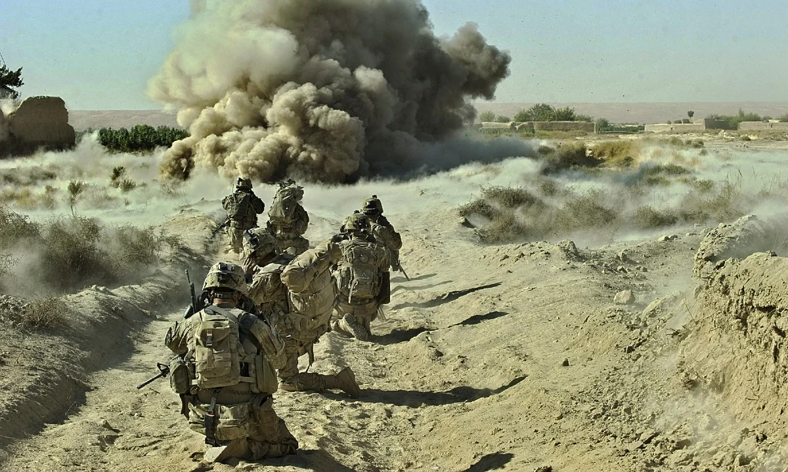
Os 20 anos de conflito entre os Estados Unidos e o Afeganistão (2001–2021) deixaram impactos profundos e duradouros em áreas humanas, políticas, econômicas e geopolíticas. O saldo envolve centenas de milhares de mortos, trilhões de dólares gastos e uma grave crise humanitária após o retorno do Talibã ao poder.
• Perdas de vidas: Estima-se que mais de 240 mil pessoas morreram diretamente em decorrência da guerra. Esse número inclui cerca de 70 mil civis afegãos e paquistaneses, dezenas de milhares de soldados afegãos e insurgentes, além de aproximadamente 2.400 militares americanos e mais de 1.100 soldados de países aliados.
• Deslocamento em massas: Milhões de afegãos foram forçados a abandonar suas casas, tornando-se deslocados internos ou refugiados em países vizinhos, como Paquistão e Irã.
• Retrocesso nos direitos humanos: Com a retomada do poder pelo Talibã em agosto de 2021, houve uma rápida eliminação das conquistas sociais alcançadas durante a ocupação. As mulheres e meninas foram proibidas de frequentar escolas secundárias e universidades, além de serem excluídas da maioria dos empregos e da vida pública.
• Colapso econômico no Afeganistão: A saída abrupta das tropas estrangeiras interrompeu a ajuda financeira internacional, que representava cerca de 75% do orçamento público afegão. O congelamento de reservas financeiras do país no exterior agravou a pobreza extrema e a insegurança alimentar, afetando a maior parte da população.
• Custo bilionário para os EUA: Os Estados Unidos gastaram mais de 2,3 trilhões de dólares com operações militares, treinamento de forças locais, reconstrução e cuidados futuros com veteranos de guerra.
• Produção de ópio: Durante o conflito, o Afeganistão consolidou-se como o maior produtor mundial de ópio (matéria-prima da heroína), cuja venda financiou grande parte das operações do Talibã e alimentou a corrupção local.
• Retorno do Talibã ao poder: Apesar de duas décadas de intervenção militar e tentativas de construir uma democracia, o governo apoiado pelo Ocidente entrou em colapso rápido em 2021. O Talibã retomou o controle do país com ainda mais armamentos deixados para trás pelo exército afegão.
• Desgaste da imagem dos EUA: A forma caótica da retirada de Cabul em agosto de 2021 abalou a credibilidade diplomática e militar dos Estados Unidos perante aliados globais e fortaleceu o discurso de potências rivais, como China e Rússia.
• Instabilidade regional: A mudança de poder reconfigurou o tabuleiro na Ásia Central, exigindo que países vizinhos negociassem diretamente com o Talibã para conter ameaças de grupos extremistas rivais, como o Estado Islâmico (ISIS-K).
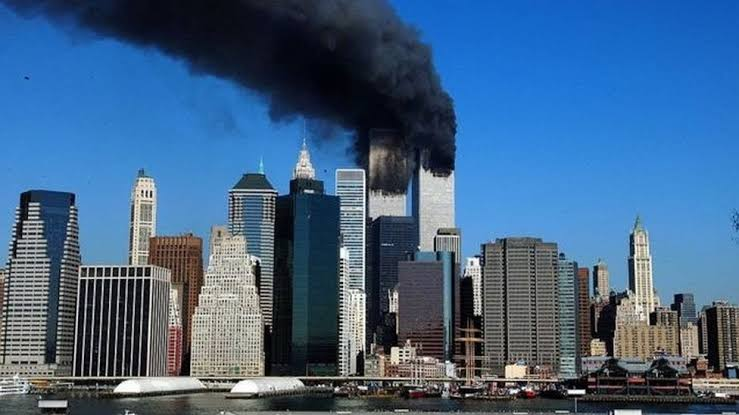
Os atentados de 11 de setembro de 2001 foram uma série de quatro ataques terroristas suicidas coordenados pelo grupo extremista Al-Qaeda contra os Estados Unidos. O evento deixou 2.977 vítimas fatais (além dos 19 sequestradores) e redefiniu a segurança global e a política externa americana.
Na manhã daquela terça-feira, 19 terroristas sequestraram quatro aviões comerciais que decolaram da costa leste americana com destino à Califórnia.
• Torres Gêmeas (Nova York): Às 8h46, o voo 11 da American Airlines atingiu a Torre Norte do World Trade Center. Às 9h03, o voo 175 da United Airlines colidiu com a Torre Sul, fazendo com que ambos os edifícios desabassem em menos de duas horas.
• Pentágono (Virgínia): Às 9h37, o voo 77 da American Airlines foi lançado contra a sede do Departamento de Defesa dos EUA, nos arredores de Washington, destruindo parte da estrutura.
• Shanksville (Pensilvânia): O voo 93 da United Airlines seguia em direção a Washington (possivelmente visando o Capitólio ou a Casa Branca). Os passageiros reagiram aos sequestradores e o avião caiu em um campo às 10h03, sem atingir o alvo.
A autoria dos ataques foi reivindicada por Osama bin Laden, líder da rede islâmica radical Al-Qaeda, que operava a partir do Afeganistão sob proteção do regime do Talibã.
• Motivações: Bin Laden justificou os ataques pela presença militar dos EUA no Oriente Médio (especialmente na Arábia Saudita), pelo apoio americano a Israel e pelas sanções econômicas impostas ao Iraque na década de 1990.
• Desfecho de Bin Laden: Após quase dez anos de buscas, ele foi localizado e morto por forças especiais da Marinha americana (Navy SEALs) em maio de 2011, em um complexo na cidade de Abbottabad, no Paquistão.
O 11 de Setembro provocou mudanças profundas dentro e fora dos Estados Unidos, conforme registros históricos da Comissão do 11 de Setembro e da BBC News Brasil.
• Guerra ao Terror: O governo de George W. Bush iniciou uma campanha militar global, resultando na invasão do Afeganistão em outubro de 2001 e na Guerra do Iraque em 2003.
• Segurança e Vigilância: Os EUA criaram o Departamento de Segurança Interna (DHS) e aprovaram o Patriot Act, lei que ampliou o poder de vigilância e investigação do governo.
• Aviação Mundial: Os procedimentos de embarque em aeroportos de todo o mundo passaram por reformas rigorosas, incluindo inspeção detalhada de bagagens, restrição a líquidos e reforço nas portas das cabines de comando.
• Impactos na Saúde: Milhares de socorristas, bombeiros e moradores de Nova York desenvolveram doenças respiratórias graves e diferentes tipos de câncer devido à inalação da poeira tóxica dos escombros.
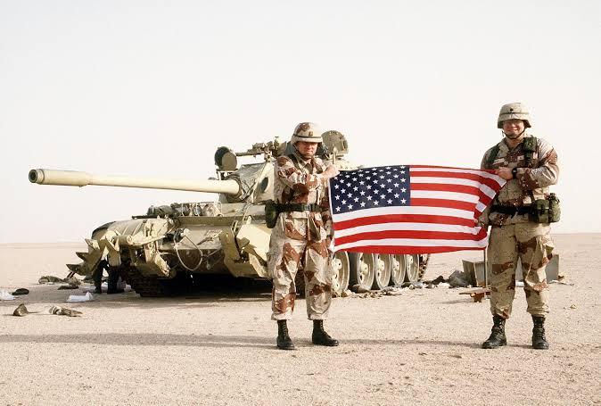
A Guerra ao Terror (oficialmente chamada de Global War on Terrorism pelos EUA) foi uma campanha militar, política e de inteligência internacional lançada pelo governo de George W. Bush logo após os atentados de 11 de setembro de 2001. O objetivo declarado era eliminar organizações terroristas globais, como a Al-Qaeda, e impedir que regimes apoiassem esses grupos.
Embora tenha envolvido operações em dezenas de países (como Paquistão, Iêmen, Somália e Filipinas), a campanha concentrou-se em dois grandes conflitos prolongados.
• O Afeganistão (2001–2021): Iniciada em outubro de 2001 para derrubar o regime do Talibã e capturar Osama bin Laden. Apesar da morte de Bin Laden em 2011, o conflito durou 20 anos e terminou com a retirada das tropas americanas e o retorno do Talibã ao poder.
• Guerra do Iraque (2003–2011): Os EUA lideraram uma coalizão para derrubar o ditador Saddam Hussein, alegando que o regime possuía armas de destruição em massa e laços com o terrorismo. As armas nunca foram encontradas, e a invasão gerou anos de guerra civil e o surgimento do grupo Estado Islâmico (ISIS).
A campanha alterou o direito internacional e a política interna americana por meio de medidas de exceção, amplamente documentadas por organizações como a Anistia Internacional e o projeto Costs of War da Universidade Brown.
• Ataques Preventivos: A chamada "Doutrina Bush" estabeleceu o direito de os Estados Unidos atacarem preventivamente nações ou grupos considerados ameaças potenciais, mesmo sem aprovação do Conselho de Segurança da ONU.
• Prisão de Guantánamo e Tortura: Os EUA criaram um centro de detenção na base naval de Guantánamo (Cuba) para manter suspeitos de terrorismo fora da jurisdição da Justiça comum americana. O uso de técnicas severas de interrogatório, como o afogamento simulado (waterboarding), gerou condenações globais por violação dos direitos humanos.
• Vigilância e Drones: O governo ampliou o monitoramento de comunicações globais (como revelado posteriormente por Edward Snowden) e popularizou o uso de drones armados para assassinatos seletivos no Oriente Médio e na África, frequentemente causando vítimas civis.
Estudos do projeto Costs of War apontam que a Guerra ao Terror deixou marcas profundas nas relações internacionais e nas regiões afetadas.
• Custo Humano: Estima-se que mais de 900 mil pessoas morreram diretamente por causa da violência nas zonas de guerra (incluindo civis, militares e insurgentes), além de milhões de mortes indiretas por doenças e destruição de infraestrutura.
• Deslocamento Populacional: Os conflitos geraram uma das maiores crises migratórias da história moderna, deslocando cerca de 38 milhões de pessoas de suas casas.
• Custo Financeiro: O gasto total dos Estados Unidos com as guerras pós-11 de Setembro ultrapassa US$ 8 trilhões, considerando operações militares, reconstrução e cuidados médicos futuros para veteranos.
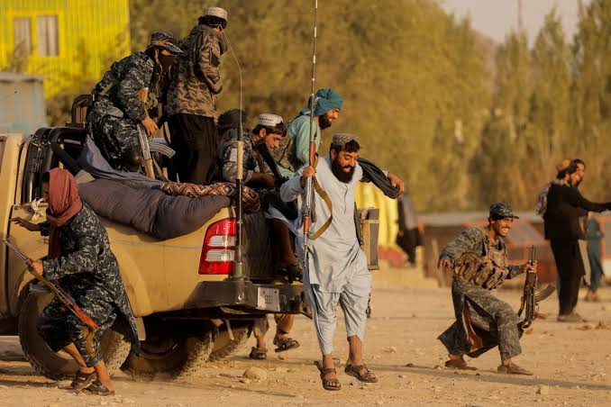
Atuou sucessivamente como aliado indireto (durante a Guerra Fria), inimigo de guerra (2001–2021) e, atualmente, como o governo de fato com o qual Washington negocia à distância sem reconhecer oficialmente.
A base que formou o Talibã nasceu de uma parceria estratégica entre Estados Unidos e Paquistão contra a União Soviética.
• Apoio aos Mujahideen: Durante a invasão soviética ao Afeganistão (1979–1989), a CIA financiou e armou grupos guerrilheiros islâmicos (mujahideen) por meio do serviço de inteligência do Paquistão (ISI).
• Formação do Grupo: Após a saída dos soviéticos e o abandono americano da região, o Afeganistão mergulhou em uma guerra civil. Ex-combatentes mujahideen e estudantes de escolas religiosas financiadas no Paquistão fundaram o Talibã em 1994, assumindo o poder em Cabul dois anos depois.
No fim dos anos 1990, o Talibã passou a abrigar Osama bin Laden e a rede Al-Qaeda, o que colocou o regime em rota de colisão direta com Washington.
• Recusa de Extradição: Logo após os atentados de 11 de setembro de 2001, o presidente George W. Bush exigiu que o Talibã entregasse Bin Laden e fechasse os campos de treinamento terrorista. O líder supremo Mulá Omar recusou, alegando falta de provas e citando códigos locais de hospitalidade.
• Derrubada do Regime: Em outubro de 2001, os EUA invadiram o Afeganistão com apoio aéreo e forças especiais, derrubando o governo do Talibã em poucas semanas e forçando seus líderes a fugirem para as montanhas e para o Paquistão.
Embora afastado do poder, o Talibã reorganizou-se e travou uma guerra de desgaste contra os Estados Unidos e o governo afegão apoiado por Washington.
• Táticas de Guerrilha: O grupo utilizou emboscadas, atentados suicidas e dispositivos explosivos improvisados (IEDs), aproveitando a corrupção e a fragilidade do governo central afegão para retomar o controle de áreas rurais.
• Impasse Militar: Mesmo com o envio de mais de 100 mil soldados americanos no auge da guerra (governo Barack Obama), os EUA concluíram que não havia vitória militar definitiva possível sem um acordo político.
Incapazes de derrotar a insurgência, os Estados Unidos passaram a negociar diretamente com o Talibã no Catar, deixando o governo oficial afegão de lado.
• O Acordo de Doha (Fevereiro de 2020): Assinado pelo governo de Donald Trump, o pacto estabeleceu a retirada total das tropas americanas em troca da promessa do Talibã de impedir que a Al-Qaeda ou outros grupos usassem o Afeganistão para atacar os EUA.
• Queda de Cabul (Agosto de 2021): Durante a execução da retirada pelo governo de Joe Biden, as forças de segurança afegãs entraram em colapso. O Talibã retomou Cabul em 15 de agosto de 2021, encerrando 20 anos de presença militar americana.
Cinco anos após o retorno do Talibã ao poder, a relação com Washington é marcada pelo pragmatismo securitário e pelo bloqueio diplomático.
• Cooperação Antiterrorismo Pontual: Embora sejam adversários ideológicos, EUA e Talibã compartilham um inimigo em comum: o Estado Islâmico (ISIS-K), que realiza ataques dentro do Afeganistão e ameaça alvos externos. Os EUA mantêm vigilância aérea e trocas de inteligência limitadas para conter o grupo.
• Sanções e Ativos Congelados: Washington não reconhece o Emirado Islâmico como governo legítimo e mantém congelados bilhões de dólares de reservas do Banco Central Afegão para evitar que o dinheiro seja usado pelo regime.
• Impasses sobre Direitos Humanos e Imigração: O Departamento de Estado rejeitou pedidos recentes do Talibã para reabrir a embaixada americana em Cabul devido à opressão sistemática contra mulheres e meninas. Paralelamente, o atual governo americano encerrou programas de acolhimento a afegãos que colaboraram com os EUA durante a guerra, gerando disputas judiciais sobre deportações.
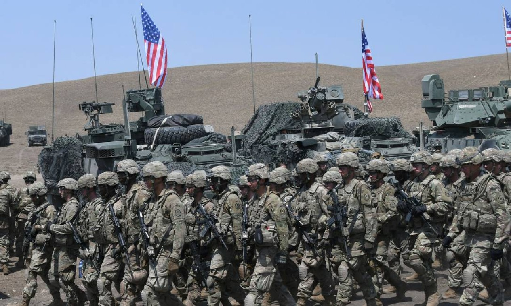
OTAN (Organização do Tratado do Atlântico Norte) atuou como a principal força multinacional de apoio a Washington. O conflito marcou a primeira vez em que a aliança invocou sua cláusula de defesa coletiva e sua primeira grande operação militar fora do continente europeu.
Logo após os atentados de 11 de setembro de 2001, a aliança militar ocidental alinhou-se imediatamente aos Estados Unidos.
• Defesa Coletiva: Em 12 de setembro de 2001, a OTAN invocou pela única vez em sua história o Artigo 5º de seu tratado fundador, que determina que um ataque armado contra um país-membro é considerado um ataque contra todos.
• Apoio Inicial: Embora a invasão inicial em outubro de 2001 tenha sido liderada pelos EUA e pelo Reino Unido, países da OTAN forneceram inteligência, acesso a bases aéreas, espaço aéreo e recursos logísticos.
Em agosto de 2003, a OTAN assumiu o comando formal da Força Internacional de Assistência à Segurança (ISAF), uma coalizão aprovada pelo Conselho de Segurança da ONU.
• Expansão pelo País: Inicialmente restrita a garantir a segurança em Cabul, a missão da OTAN expandiu-se gradualmente para todo o território afegão, enfrentando o ressurgimento violento da insurgência do Talibã, especialmente no sul e no leste.
• Força Multinacional: No auge das operações (por volta de 2011), a ISAF reuniu mais de 130 mil soldados de cerca de 50 países (incluindo membros da OTAN e parceiros como Austrália e Geórgia), sob comando operacional de generais americanos.
• Reconstrução e Segurança: Além de combater o Talibã, a aliança criou Equipes de Reconstrução Provincial (PRTs) para construir estradas, escolas, hospitais e tentar estender a autoridade do governo central afegão.
Em dezembro de 2014, a OTAN encerrou oficialmente suas operações de combate direto e transferiu a responsabilidade pela segurança para o exército afegão.
• Foco em Assessoria: Em janeiro de 2015, teve início a missão Resolute Support (Apoio Resoluto), com um contingente reduzido (entre 10 mil e 17 mil militares) dedicado a treinar, aconselhar e financiar as Forças Nacionais de Defesa e Segurança do Afeganistão.
• Dependência dos EUA: Apesar do caráter multinacional, os aliados europeus dependiam quase totalmente da logística, do transporte aéreo, da inteligência e do apoio médico fornecidos pelos Estados Unidos.
A saída do Afeganistão expôs divergências estratégicas entre Washington e seus aliados europeus na aliança.
• Decisão Unilateral: O Acordo de Doha (2020) foi negociado diretamente entre os EUA e o Talibã, com pouca consulta aos parceiros da OTAN, que operavam sob o princípio de "entrar juntos, ajustar juntos e sair juntos".
• Evacuação Caótica: Quando o governo de Joe Biden confirmou a retirada total para agosto de 2021, os demais países da OTAN não tiveram condições logísticas de permanecer sozinhos e precisaram evacuar suas tropas e cidadãos às pressas durante a queda de Cabul.
• Balanço e Impacto na Aliança: Mais de 1.100 militares de países aliados da OTAN (fora os EUA) morreram no conflito, com destaque para o Reino Unido (457 mortos), Canadá (158) e França (89). O desfecho acelerou debates na Europa sobre a necessidade de maior autonomia militar em relação às decisões de Washington.
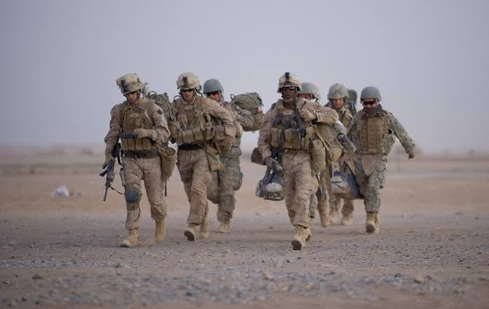
A retirada das tropas dos Estados Unidos e da OTAN em agosto de 2021 marcou o fim de 20 anos de guerra no Afeganistão. O processo ficou marcado pelo colapso imediato do governo afegão apoiado pelo Ocidente, pela retomada do poder pelo Talibã e por uma evacuação aérea caótica no aeroporto de Cabul.
A saída foi desenhada antes da posse de Joe Biden, durante o primeiro mandato de Donald Trump.
• Negociação Direta: Em fevereiro de 2020, os EUA e o Talibã assinaram o Acordo de Doha no Catar, excluindo o governo oficial afegão das negociações.
• Termos do Pacto: Washington comprometeu-se a retirar todas as tropas estrangeiras até maio de 2021 e a pressionar pela libertação de 5.000 prisioneiros do Talibã. Em troca, o grupo prometeu impedir que a Al-Qaeda e outros extremistas usassem o solo afegão contra os EUA.
• Redução de Tropas: Entre 2020 e o início de 2021, o contingente americano foi reduzido de cerca de 13.000 para apenas 2.500 soldados.
Ao assumir a presidência em janeiro de 2021, Joe Biden decidiu manter a retirada, adiando apenas o prazo final para o fim de agosto.
• Abandono da Base de Bagram: Em julho de 2021, as forças americanas deixaram discretamente a Base Aérea de Bagram, seu principal centro militar no país, transferindo o controle para o exército afegão.
• Avanço Relâmpago do Talibã: Sem o apoio aéreo, a inteligência e a manutenção logística fornecidos pelos americanos, as Forças de Segurança do Afeganistão (estimadas em 300 mil homens no papel) desmoronaram rapidamente.
• Queda de Cabul (15 de agosto de 2021): Em pouco mais de uma semana, o Talibã tomou quase todas as capitais provinciais sem resistência significativa. Em 15 de agosto, o presidente afegão Ashraf Ghani fugiu do país e os insurgentes entraram no palácio presidencial em Cabul.
Com a cidade sob controle do Talibã, o Aeroporto Internacional Hamid Karzai tornou-se a única rota de saída do país, protegida às pressas por cerca de 6.000 militares americanos enviados para garantir a evacuação.
• Cenas de Desespero: Milhares de afegãos invadiram a pista do aeroporto tentando embarcar nos aviões militares. Imagens de civis se agarrando à fuselagem de cargueiros americanos C-17 em movimento (alguns caindo após a decolagem) tornaram-se o símbolo do colapso da missão.
• Atentado em Abbey Gate: Em 26 de agosto de 2021, um homem-bomba do grupo rival Estado Islâmico (ISIS-K) detonou explosivos em um dos portões do aeroporto lotado de civis. O ataque matou cerca de 170 afegãos e 13 militares americanos (as últimas baixas dos EUA na guerra).
• Operação de Resgate: Entre 14 e 30 de agosto, os EUA e aliados realizaram a maior ponte aérea de evacuação da história militar, retirando mais de 124.000 pessoas (cidadãos estrangeiros, diplomatas e afegãos vulneráveis). Ainda assim, dezenas de milhares de aliados locais ficaram para trás.
O último avião militar americano decolou de Cabul nos minutos finais de 30 de agosto de 2021, encerrando oficialmente a guerra.
• Desgaste Político: A execução caótica da retirada derrubou os índices de aprovação de Joe Biden nos Estados Unidos e gerou duras críticas de aliados europeus da OTAN pela falta de coordenação.
• Crise de Refugiados e Deportações: A saída gerou uma onda global de refugiados afegãos. Nos anos seguintes, a política americana para esses aliados mudou drasticamente, culminando em disputas judiciais sobre o corte de programas de acolhimento e planos de deportação.
• Mudança de Foco Global: Para Washington, o fim da ocupação encerrou a era das grandes intervenções terrestres no Oriente Médio e na Ásia Central, permitindo redirecionar recursos militares para a competição estratégica com a China e a contenção da Rússia.
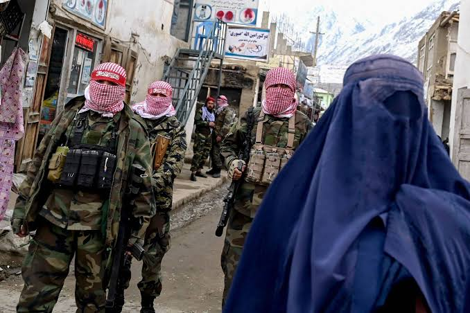
Situação Atual do Afeganistão
De acordo com dados da ONU News e do governo do Reino Unido, a situação socioeconômica da população deteriorou-se rapidamente:
• Fome e Pobreza: Cerca de 21,9 milhões de pessoas (quase metade da população) dependem de ajuda humanitária para sobreviver. Mais de 14 milhões enfrentam insegurança alimentar aguda e cerca de 3,5 milhões de crianças sofrem de desnutrição severa.
• Saúde em Colapso: Devido aos cortes drásticos no financiamento internacional, mais de 700 centros de saúde (cerca de 40% da rede de atenção primária) fecharam as portas entre 2025 e 2026.
• Crise de Retornados: Desde o final de 2023 até o segundo semestre de 2026, mais de 6,5 milhões de afegãos retornaram ao país (muitos deportados em massa pelo Paquistão e pelo Irã). A chegada dessas famílias sem abrigo ou renda pressiona ainda mais uma economia estagnada e afetada por secas prolongadas.
O governo do Emirado Islâmico endureceu suas leis e aprofundou o que especialistas da ONU classificam como "apartheid de gênero":
• Bloqueio Educacional: Meninas continuam proibidas de frequentar o ensino médio e universidades. Segundo relatório da UNESCO, mais de 2,6 milhões de adolescentes estão excluídas da escola secundária, além de 53% das crianças em idade primária estarem fora do ensino formal.
• Restrições à Vida Pública: Mais de 160 decretos restringem a presença feminina na sociedade. A participação das mulheres no mercado de trabalho caiu para cerca de 5% a 7%, e a maioria precisa da permissão e companhia de um parente homem (mahram) para sair de casa ou viajar.
• Perseguição e Justiça Internacional: Jornalistas, opositores e minorias religiosas (como os xiitas) sofrem repressão constante e prisões arbitrárias. O Tribunal Penal Internacional (TPI) emitiu mandados de prisão contra o líder supremo do Talibã, Hibatullah Akhundzada, e o chefe do Judiciário por crimes contra a humanidade ligados à perseguição de gênero.
Embora o Talibã mantenha controle territorial sobre a maior parte do país, a estabilidade regional piorou significativamente:
• Confronto com o Paquistão: As relações com Islamabad deterioraram-se a ponto de o Paquistão declarar "guerra aberta" contra o regime afegão em 2026. Os paquistaneses acusam o Talibã de abrigar militantes do grupo TTP (Talibã Paquistanês), realizando ataques aéreos em território afegão — incluindo bombardeios em Cabul e na fronteira que deixaram centenas de civis mortos e milhares de deslocados.
• Ameaça do Estado Islâmico (ISIS-K): O grupo rival continua realizando atentados dentro do Afeganistão e recrutando combatentes na região, representando uma preocupação de segurança compartilhada até mesmo pelos países vizinhos.
• Retorno do Ópio: Após proibir o cultivo de papoula em 2022 e derrubar a produção, relatórios da ONU apontam que o cultivo ilícito de ópio voltou a crescer como alternativa de sobrevivência para agricultores empobrecidos.
• Isolamento Ocidental vs. Pragmatismo Regional: Estados Unidos e União Europeia mantêm sanções financeiras, ativos congelados e recusam o reconhecimento diplomático até que os direitos humanos sejam respeitados. Por outro lado, apenas a Rússia reconheceu formalmente o governo, enquanto potências regionais como China e Emirados Árabes Unidos mantêm laços comerciais e investimentos pragmáticos (especialmente em mineração e energia).